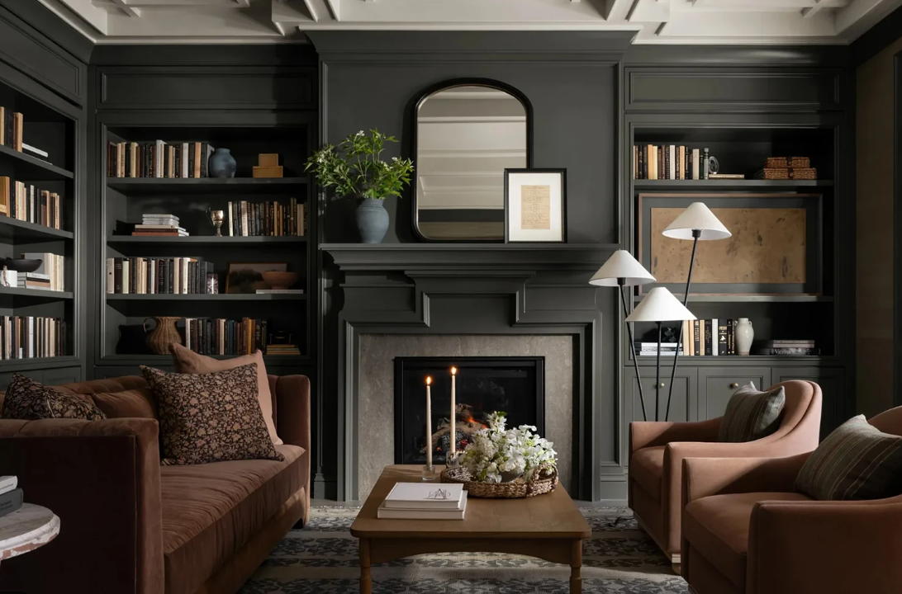
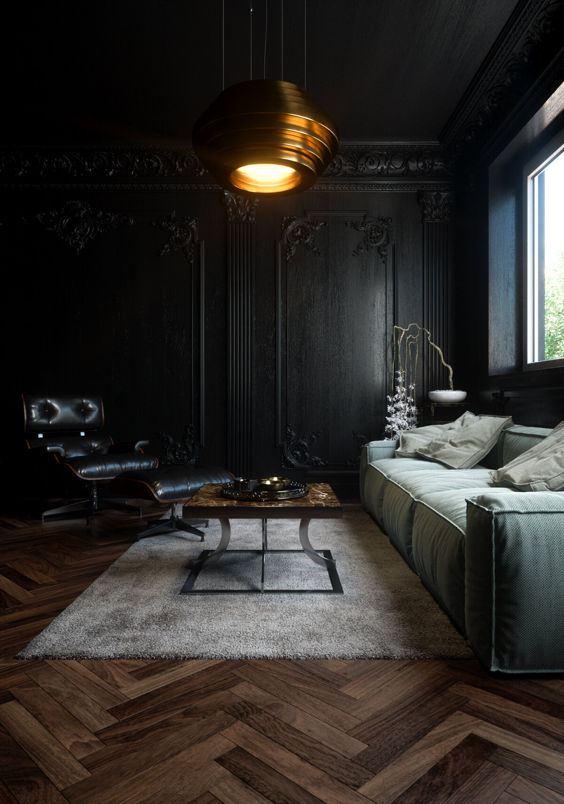
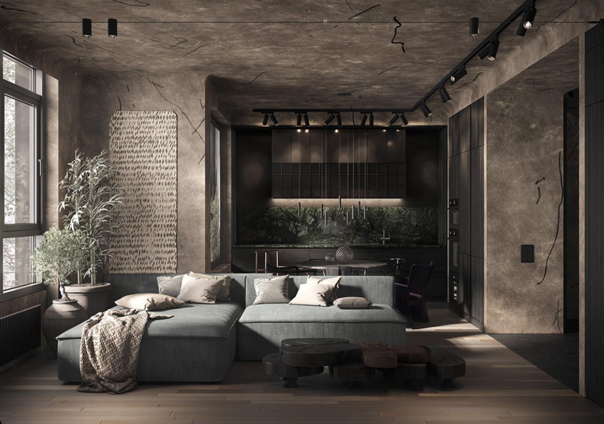
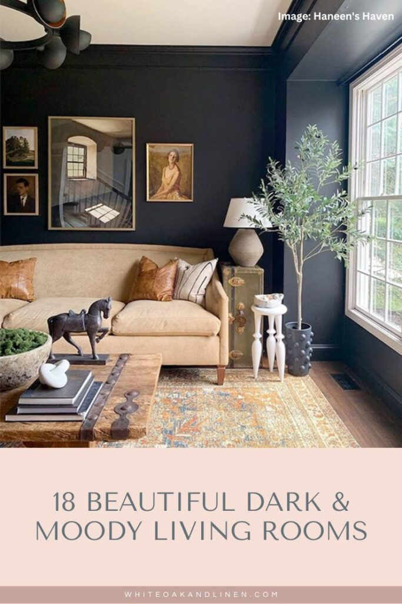
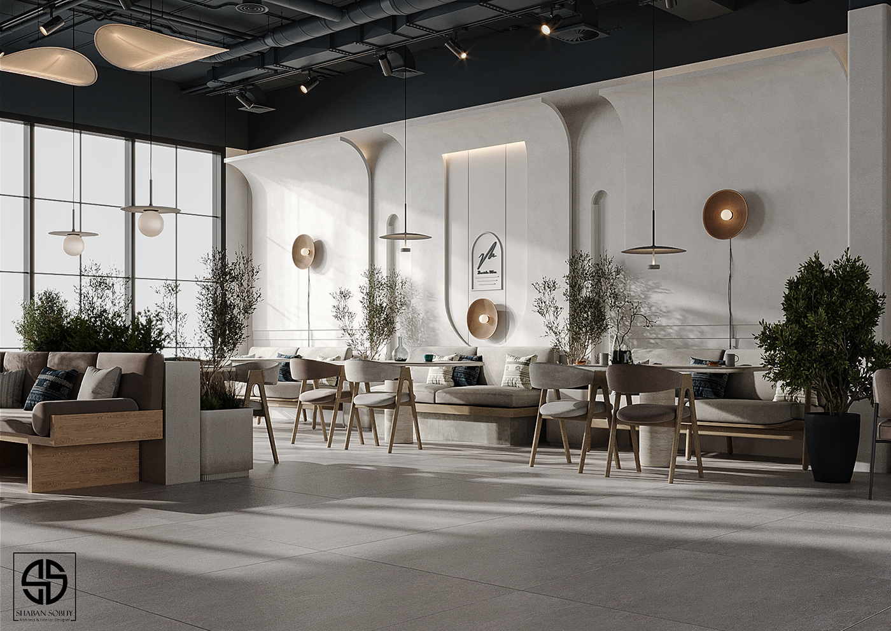
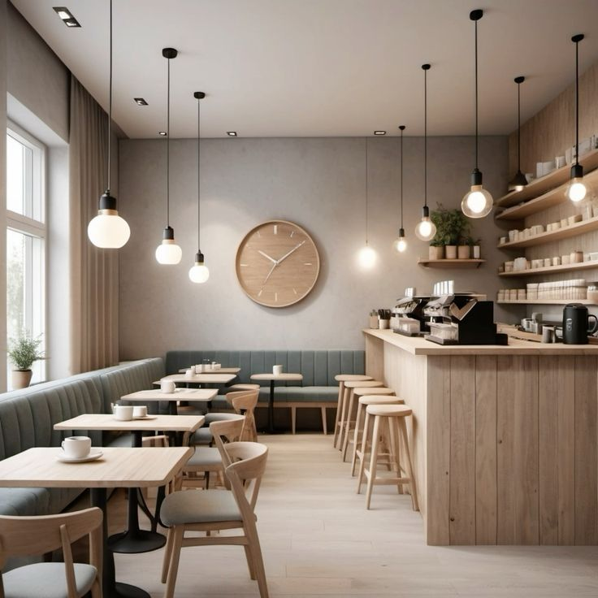

Work Archive
-

늦게 오는 빛의 거실 (202303)
밤에 가장 먼저 켜지는 건 조명보다 창밖의 불빛이라고 생각했다. 이 공간은 도시의 잔광이 천천히 스며들도록 설계되었다.
-

어두운 집의 기록(202308)
밝음보다 어둠이 사람을 더 솔직하게 만든다. 가구는 낮추고, 빛은 남겨 두었다.
-

작은 불빛의 구조(202402)
이 방은 큰 조명 대신 작은 불빛들이 연결되어 완성된다. 이동할 때마다 빛이 따라오도록 배치했다.
-

밤에도 숨 쉬는 카페(202409)
오래 머무는 사람을 위해 소리와 간격을 먼저 설계했다. 조명은 대화의 높이에 맞췄다.
-

불을 끄고 들어가는 방(202503)
명상은 어둠에서 시작된다. 바닥의 감촉과 벽의 질감이 더 잘 느껴지도록 조명을 낮췄다.
-

시간이 남아 있는 집(202511)
새로 고치기보다 남겨두는 것을 선택했다. 흔적이 이 집의 가장 좋은 장식이기 때문이다.